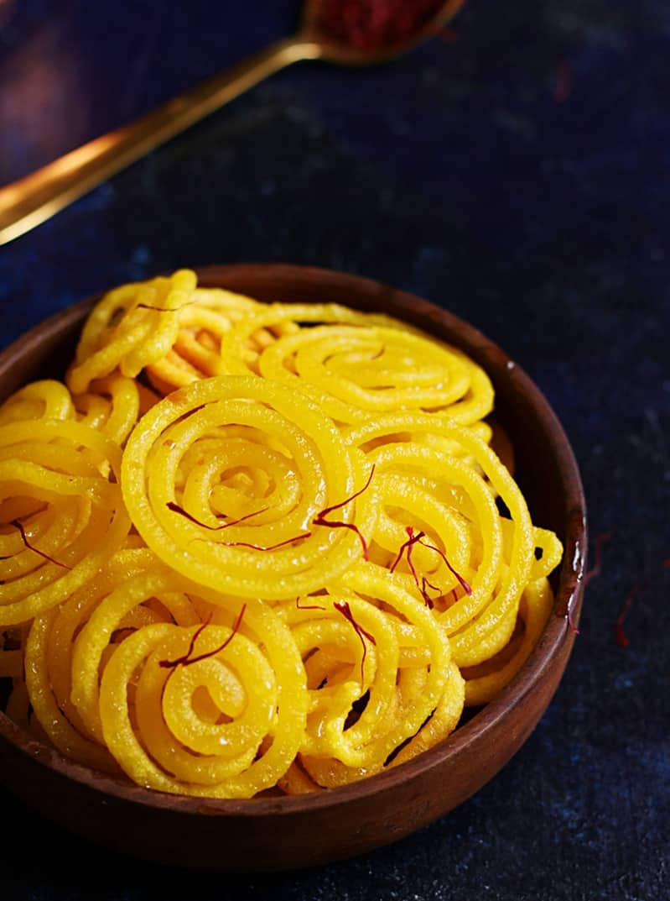
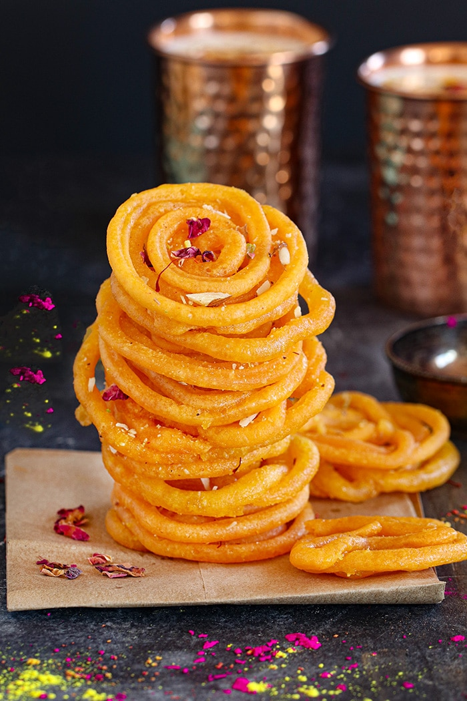
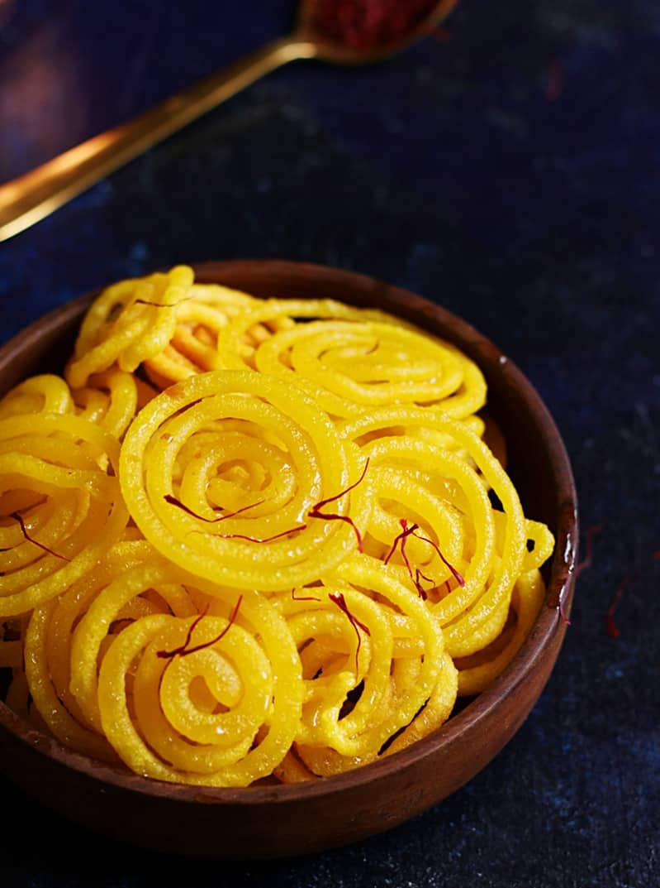
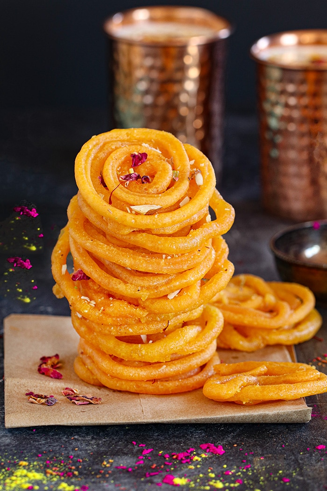
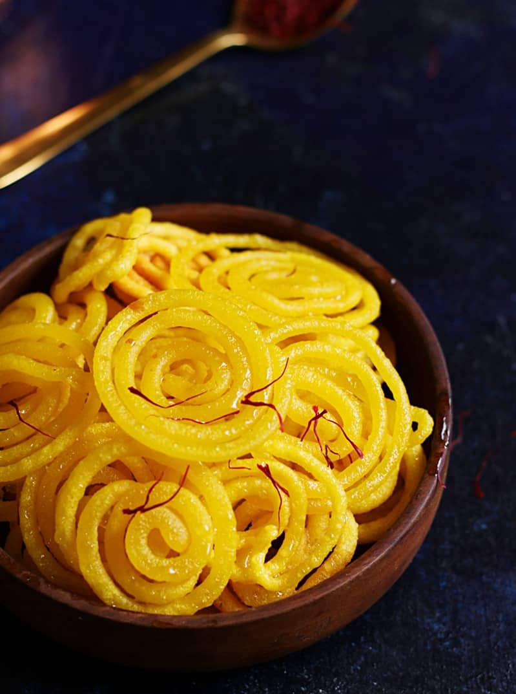
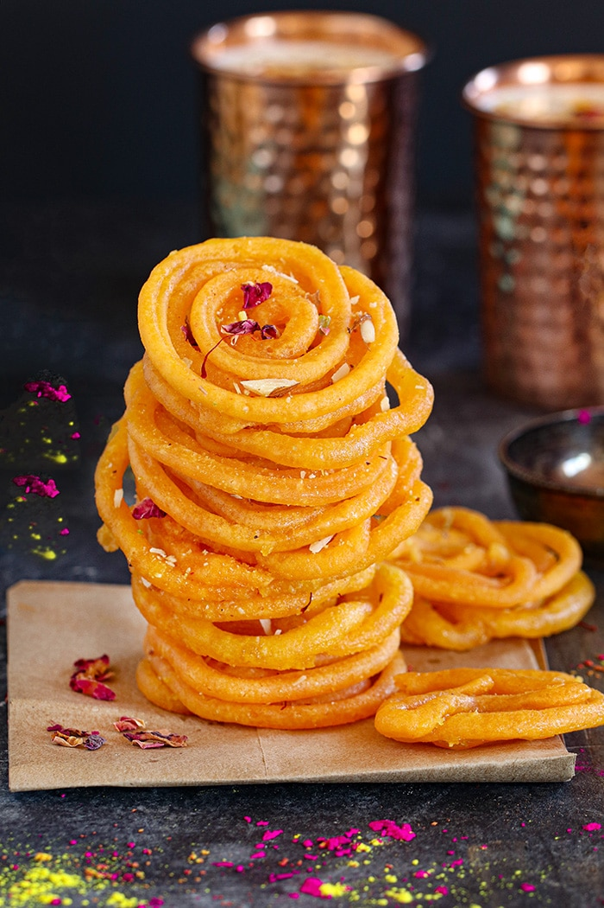
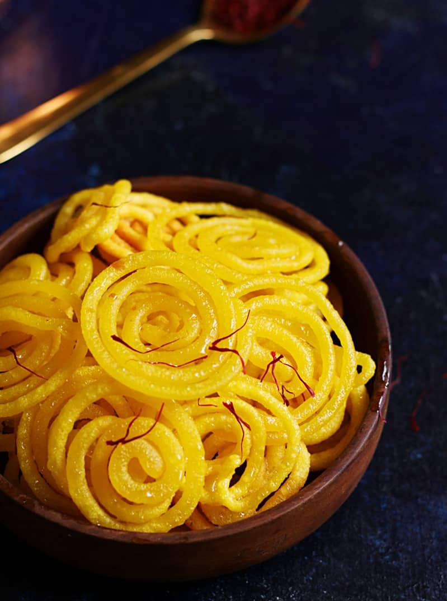
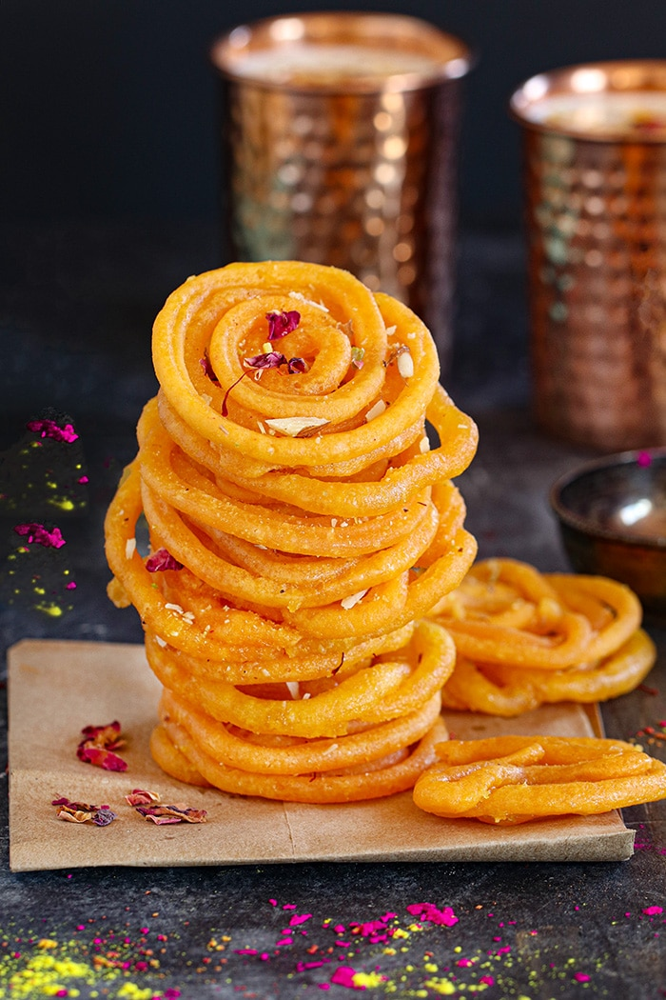

Jalebi is a popular sweet from the Indian cuisine. It is sold in all mithai shops (sweet shops) and is also a popular street food sold by cart vendors in western and northern Indian cities and towns.
Think of Jalebi as the equivalent to American funnel cakes: fried, crispy and sugar-coated. They’re a common street food in India, typically sold in the Northern and Western regions. To much surprise, it’s also a popular breakfast food served with a glass of warm milk on the side. We bet you’ll love these air-fryer Indian recipes.